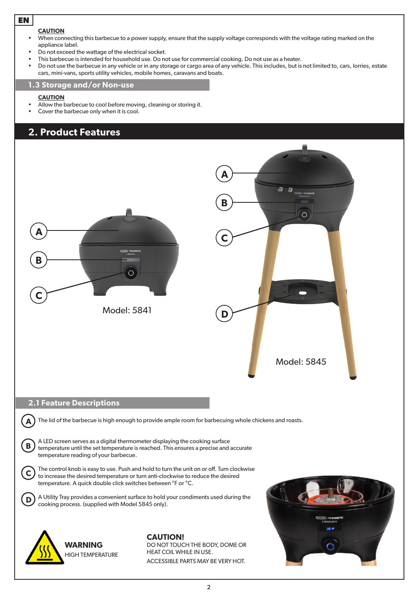
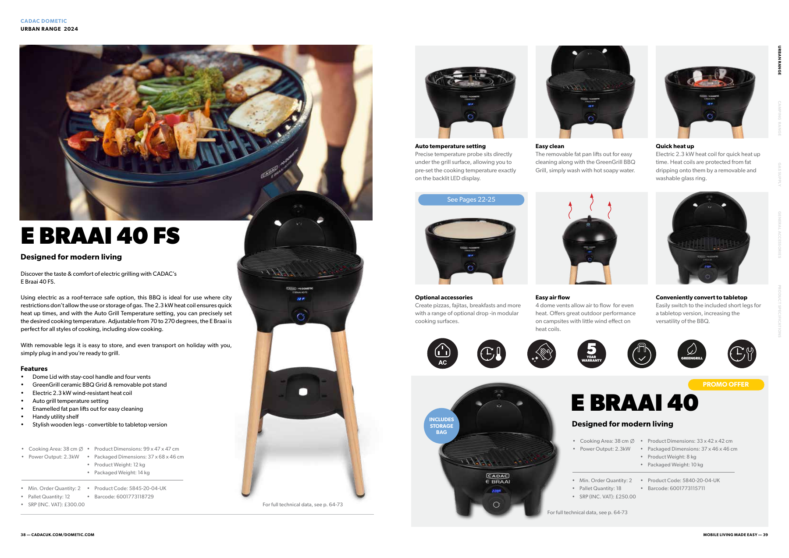

1. 집에서 미리 준비
0/5현장에 수도가 없으므로 세척·손질까지 끝내기
새벽배송 수령 → 고기만 냉장실에 넣기
은박봉투 속 드라이아이스·아이스팩은 빼고 고기만 냉장실 보관. 일회용 은박봉투는 버리지 말고 킵, 아이스팩은 냉동실에 넣어뒀다가 출발할 때 재활용.
냉동 양고기 해동 상태 & 갈비대 분리 확인
숄더랙 800g, 프렌치랙 300g×2팩도 냉장실에 넣어 해동 시작. 갈비대가 1대씩 나뉘어 있는지 확인.
출발 1시간 전 양고기 만져보기
살짝 얼어 있거나 말랑하면 그대로 출발(이동 중 자연 해동). 돌처럼 꽁꽁 얼어 있으면 포장 뜯지 않은 채 찬물에 20~30분 담가 해동.
옥수수·버섯·파프리카·라임 씻고 썰기
초당옥수수 3개는 3등분(총 9조각), 새송이는 길게, 파프리카는 씨 빼고 큼직하게. 씻은 뒤 물기 빼서 용기에 담기. 라임 1개도 짜기 좋게 자르기.
집 냉동 버터 약 20g 덜어 담기
작은 밀폐용기에 담아 준비. 이동 중 살짝 말랑해져도 뜨거운 옥수수에 펴 바르기 더 편함.
💡 키친타월은 일반 배송이라 출발 전까지 안 오면 집에 있는 키친타월을 챙긴다.
2. 가방에 넣을 짐 체크
0/7출발 직전 냉장고에서 꺼내 쿠팡 은박봉투에 담기
양고기 1.4kg (은박봉투 + 아이스팩)
고메프리미엄 숄더랙 800g(1팩) + 프렌치랙 300g(2팩).
소고기 1.4kg (은박봉투에 합포장)
프라임 등심 500g(2팩) + 꽃갈비살·갈비살 모둠 400g(1팩).
손질한 채소·옥수수 9조각·라임 1개
새송이버섯 400g, 파프리카 2개, 초당옥수수 9조각, 자른 라임 1개.
고기용 소금·소스 5종
허브솔트(50g), 트러플솔트(50g), 양껏머글램 민트젤리(170g), 움트리 생와사비(120g), 폰타나 바베큐 소스(285g).
마약 옥수수 재료 4종
소분한 버터(약 20g), 마요네즈(50g), 파마산 치즈(85g), 파프리카 시즈닝(60g).
키친타월
불판 기름칠(붓 대용) 및 고기 물기 제거용.
맥주 8캔
미리 시원하게 냉장해 둔 맥주 챙기기.
3. 현장 도착 전·후 확인
0/4이동 중 픽업 및 주인·지인 확인 사항
루카831 건물에서 샐러드 테이크아웃
루프탑(29층 옥상) 올라가기 전에 픽업.
편의점에서 마실 물 구매
얼음은 당일 필요하면 같이 구매.
지인 집 식용유(카놀라유·해바라기유) 확인
예열 전 불판 코팅용으로 소량 사용. 후추도 필요하면 있는지 확인.
일회용품(접시·수저·와인잔/물컵)·나무젓가락·세척 장소 확인
주인이 준비한 집게·가위·접시·수저와 함께 와인잔/물컵(및 와인 오프너)이 있는지 확인(생고기용/구운 고기용 접시·집게 분리). 옥수수용 나무젓가락 유무와 손·불판 씻을 곳 확인.
도착 후 세팅 & 예열
0/4그늘 보관 → 자리 분리 → 불판 기름칠 → 예열
고기는 테이블 아래 그늘에 은박봉투째 두기
직사광선과 그릴 열기를 피하고, 지금 바로 구울 팩만 그때그때 뜯기.
생고기 자리 vs 다 구운 고기 자리 나누기
생고기 접시·집게와 다 구운 고기용 새 접시·집게·가위를 섞어 쓰지 않기.
식탁에 소스 4종 조금씩 덜어 세팅
민트젤리, 생와사비, 트러플솔트, 바베큐 소스(아이 주기 전 맵기 확인).
식은 불판에 기름칠 → 200°C에서 3~5분 예열
키친타월로 볼록한 그릴 줄무늬까지 식용유를 얇게 펴 바른 뒤, 다이얼을 길게 눌러 켜고 200°C 예열.
고기 & 음식 굽는 순서
0/4굽기 직전 키친타월로 핏물 닦고 허브솔트는 가볍게만
1. 양고기 + 소고기 + 가니시 (첫 판)
약 220~230°C
양고기 안 먹는 사람도 바로 먹게 첫 판은 양·소고기를 함께 나누어 굽는다. 남는 자리에 버섯·파프리카를 구워 먼저 꺼내고, 다 구운 양·소는 접시에 구분해 담는다.
양고기 → 민트젤리 / 소고기 → 와사비·트러플솔트·바베큐 소스
2. 마약 옥수수 9조각
약 190~200°C
첫 고기 먹는 동안 온도를 살짝 낮춰 옥수수를 올린다. 뚜껑을 덮어 10~15분 익히되, 중간중간 열어 골고루 굴려가며 노릇한 구운 색을 낸다. (아래 마무리 순서 참고)
3. 남은 양·소고기 & 가니시 추가
약 220~230°C
먹는 속도에 맞춰 나누어 굽는다. 두꺼운 등심은 다 구운 뒤 접시에서 2~3분 레스팅한 다음 먹기 좋게 썬다.
4. 돼지 목살 약 1kg 마무리
약 200~220°C
지인이 가져온 목살로 마무리. 두꺼우면 겉면을 먼저 구운 뒤 뚜껑을 덮어 속까지 익힌다. 부족하면 편의점 햇반·컵라면 추가.
🌽 마약 옥수수 마무리 공식 (9조각)
다 구운 옥수수를 접시에 옮긴 뒤 뜨거운 상태에서 바로 진행
① 버터 20g
② 마요네즈 2~3큰술
③ 치즈가루 2~3큰술
④ (아이 몫 덜기)
⑤ 파프리카 시즈닝
⑥ 라임즙
• 숟가락 뒷면 활용: 옥수수가 뜨거울 때 버터를 올리고 숟가락 등으로 문질러 녹여 바른 뒤 마요네즈를 펴 바른다.
• 다시 굽지 않기: 마요네즈·치즈를 올린 뒤에는 그릴에 다시 올리지 않는다.
• 나무젓가락 손잡이: 조금 식힌 뒤 꽂는다. 심이 딱딱해 안 들어가면 억지로 꽂지 말고 집게로 집어 먹는다.
종료 & 세척 정리
0/2다이얼 길게 눌러 끄고 플러그 뽑기
불판이 뜨거울 때 찬물을 붓지 말고 충분히 식힌다.
식힌 분리형 불판·기름받이만 스펀지 세척
철수세미 사용 금지. 전기 본체에는 절대 물을 붓지 않는다.
CADAC E-Braai 40 FS 조작법
출력 2,300W · 원형 불판 지름 38cm · 70~270°C
| 다이얼 조작 | 동작 |
|---|---|
| 길게 누르기 | 전원 켜기 / 끄기 |
| 시계 방향 돌리기 | 설정 온도 올리기 (깜박인 뒤 반영) |
| 반시계 방향 돌리기 | 설정 온도 내리기 |
| 빠르게 두 번 누르기 | °C ↔ °F 단위 전환 |
• 예열: 식은 불판에 식용유 얇게 바르기 → 전원 켜기 → 200°C에서 3~5분 예열.
• 고기를 올리면 실제 불판 온도는 잠시 내려가도 표시창 숫자는 설정값을 그대로 유지할 수 있습니다.
• 고기를 올리면 실제 불판 온도는 잠시 내려가도 표시창 숫자는 설정값을 그대로 유지할 수 있습니다.

주의사항 & 오류 코드
🔥 기름에 불이 붙었을 때
절대 물을 붓지 마세요! 뚜껑을 덮고 전원을 끈 뒤 안전하게 플러그를 뽑고 불이 꺼질 때까지 뚜껑을 닫아 둡니다.
절대 물을 붓지 마세요! 뚜껑을 덮고 전원을 끈 뒤 안전하게 플러그를 뽑고 불이 꺼질 때까지 뚜껑을 닫아 둡니다.
| 코드 | 원인 및 대처 |
|---|---|
| E1 / E2 | 조리면 온도 센서 이상 → 플러그 뺐다가 재시작 |
| E3 / E4 | 메인보드 온도 센서 과열/이상 → 플러그 빼고 식힌 뒤 재시작 |

고기 구성 요약 (총 약 3.8kg)
성인 7명 + 초1 아이 1명 (1인당 생고기 약 475g, 양 뼈 포함)
| 품목 | 구성 | 중량 |
|---|---|---|
| 미국산 프라임 등심 (냉장) | 500g × 2팩 | 1,000g |
| 호주산 꽃갈비살·갈비살 모둠 (냉장) | 400g × 1팩 | 400g |
| 고메프리미엄 램 숄더랙 (냉동) | 800g × 1팩 | 800g |
| 고메프리미엄 램 프렌치랙 (냉동) | 300g × 2팩 | 600g |
| 돼지 목살 (지인 지참) | 두툼한 구이용 | 약 1,000g |
| 합계 (소 1.4kg + 양 1.4kg + 돼지 1kg) | 약 3.8kg | |
쿠팡 결제 내역 & 정산 메모 (17종)
10/10 주문 완료
💰 총 결제 금액: 208,560원 (성인 7명 균등 시 1인 약 29,800원 / 29,794원)
* 건물 샐러드, 편의점 물, 지인 목살 비용, 각자 주류는 별도
* 건물 샐러드, 편의점 물, 지인 목살 비용, 각자 주류는 별도
| 품목 | 구성 | 결제 금액 |
|---|---|---|
| 프라임 등심 스테이크 | 냉장 500g×2팩 | 57,870원 |
| 호주산 램 프렌치랙 | 냉동 300g×2팩 | 41,480원 |
| 고메프리미엄 램 숄더랙 | 냉동 800g 1팩 | 34,880원 |
| 꽃갈비살·갈비살 모둠 | 냉장 400g 1팩 | 26,900원 |
| 손질 초당옥수수 | 3개입 1팩 | 8,900원 |
| 양껏머글램 민트젤리 | 170g 1개 | 8,000원 |
| 움트리 육류n 생와사비랑 | 120g 1개 | 4,790원 |
| 파프리카 시즈닝 | 60g 1개 | 3,970원 |
| 파마산 치즈 블렌드 | 85g 1개 | 3,380원 |
| 빨강·노랑 파프리카 | 2개입 1팩 | 2,990원 |
| 손질 새송이버섯 | 400g 1팩 | 2,680원 |
| 폰타나 바베큐 소스 | 285g 1개 | 2,590원 |
| 백설 찍어먹는 트러플솔트 | 50g 1개 | 2,480원 |
| 백설 허브맛 솔트 오리지널 | 50g 1개 | 2,470원 |
| 라임 | 1개 (약 90g) | 2,100원 |
| 키친타월 (일반배송) | 100매 1개 | 1,970원 |
| 마요네즈 | 50g 1개 | 1,110원 |
| 17종 총 결제 금액 | 208,560원 | |